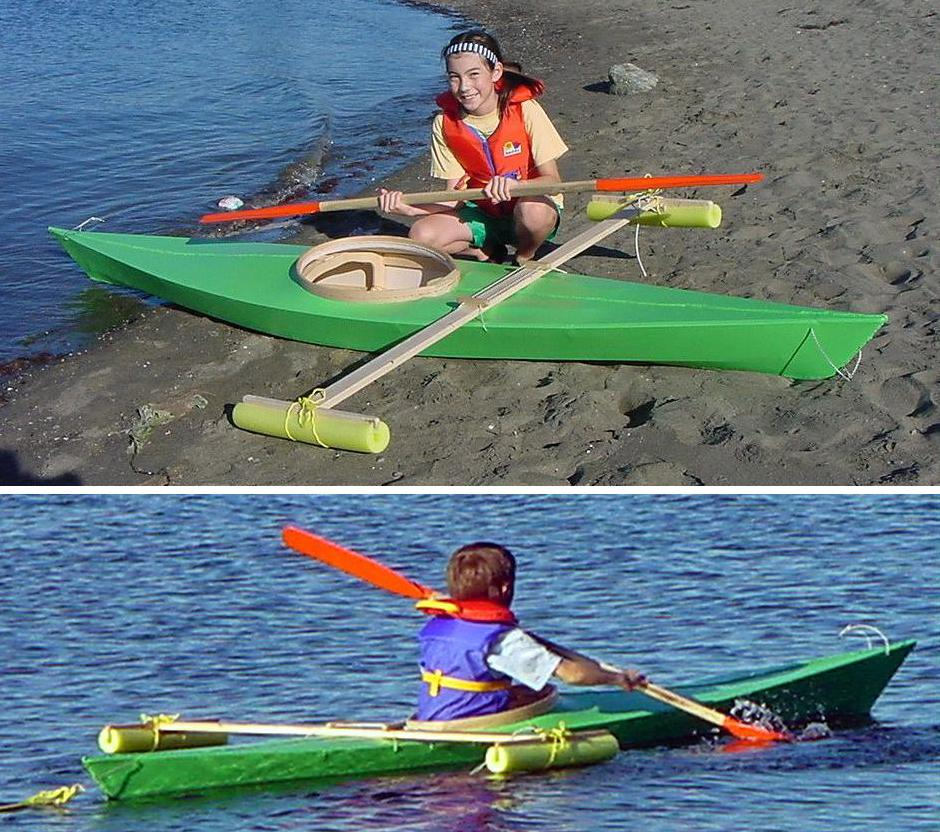

| Sea Flea by Kelly (CA) | Menu Previous Page Next Page |
|

Kelly, from Surrey, British Columbia, Canada has completed a Sea Flea for his children. The 11 foot kayak weighs 15 lbs. The outrigger provides extra stability while learning to paddle. The skin is 10oz canvas coated with exterior latex paint.
|
|